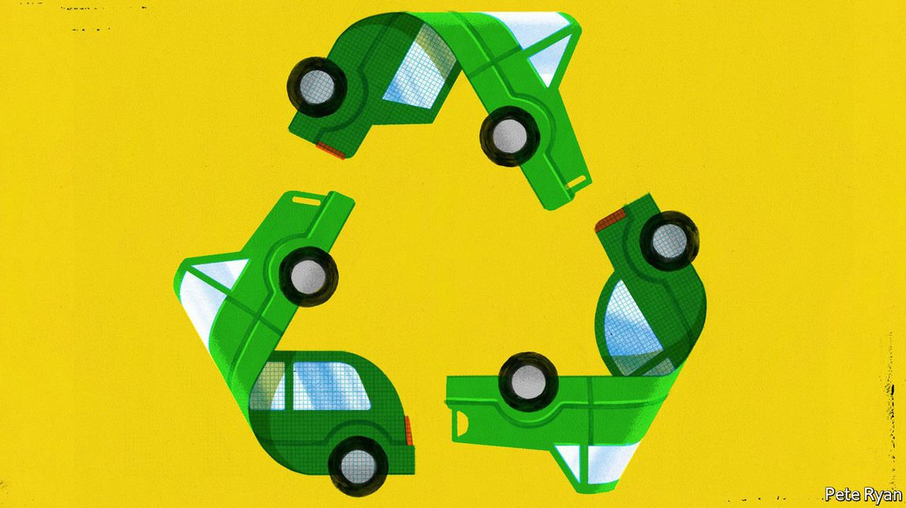
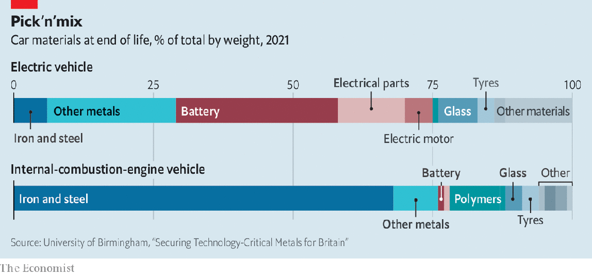
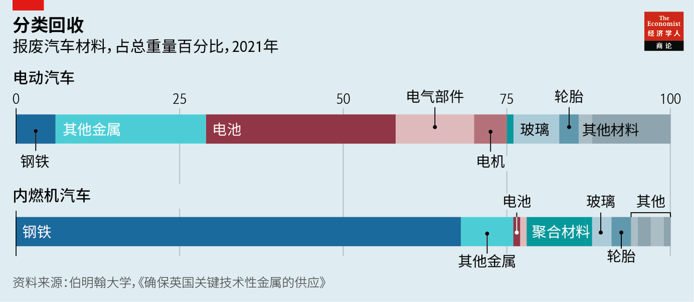

Text
2021-05-27T15:20:53+00:00
Scrapyards of tomorrow
未来废料场
未來廢料場
Old electric cars are a raw material of the future
老旧电动汽车是未来的原材料
老舊電動汽車是未來的原材料
But they need to be designed to make recycling them easier
但它们需要在设计时就降低回收利用的难度
但它們需要在設計時就降低回收利用的難度
CAR SALES have, generally speaking, plunged during the coronavirus epidemic. But there has been one bright spot. Electric vehicles (EVs) continue to grow in popularity. According to IHS Markit, a research firm, almost 2.5m battery-electric and plug-in-hybrid cars were sold around the world in 2020—and the company expects that number to grow by 70% this year. BloombergNEF, another researcher, reckons that by 2030 some 8% of the 1.4bn cars on the road will be electric, rising to more than 30% by 2040. It is not, moreover, just a matter of cars. There will also be electric lorries, buses, motorbikes, bicycles, scooters, ships and maybe even aircraft. And, when all of these machines come to the ends of their useful lives, they will need to be recycled.
总体而言，新冠疫情期间汽车销售大幅下降。但其中有一个亮点。电动汽车车队持续扩张。据研究公司IHS Markit称，2020年全球共售出近250万辆纯电动汽车和插电式混合动力汽车，该公司预计今年这一数字将增长70％。另一家研究公司彭博新能源财经（BloombergNEF）估计，到2030年，在全球道路上行驶的14亿辆汽车中约有8％会是电动汽车，到2040年将增长到30％以上。而且，数量增长的将不仅仅是电动汽车，还会有电动卡车、电动公交车、电动摩托、电动自行车、电动踏板车、电动轮船，甚至可能还有电动飞机。而当所有这些机器到了使用寿命，就需要对它们回收利用。
總體而言，新冠疫情期間汽車銷售大幅下降。但其中有一個亮點。電動汽車車隊持續擴張。據研究公司IHS Markit稱，2020年全球共售出近250萬輛純電動汽車和插電式混合動力汽車，該公司預計今年這一數字將增長70％。另一家研究公司彭博新能源財經（BloombergNEF）估計，到2030年，在全球道路上行駛的14億輛汽車中約有8％會是電動汽車，到2040年將增長到30％以上。而且，數量增長的將不僅僅是電動汽車，還會有電動卡車、電動公交車、電動摩托、電動自行車、電動踏板車、電動輪船，甚至可能還有電動飛機。而當所有這些機器到了使用壽命，就需要對它們回收利用。
This coming avalanche of e-waste will be hard to deal with. When a petrol or diesel car is dismantled and crushed, as much as 95% of it is likely to be used again. Ways to do that are well-developed, straightforward and helped by the fact that, on average, almost 70% of such a vehicle consists of readily recyclable ferrous metals. EVs, by contrast, contain a far greater variety of materials (see chart). Separating and sorting these is tricky, especially as many of them are locked up inside complex electrical components.
这场即将到来的电子垃圾大雪崩会很难对付。汽油或柴油车被拆卸或压碎后，多达95%的部分很可能都会被回收再利用。所用的方法已经很完善，也很直截了当，这其中有一个有利因素：这类车辆中平均有近70%的部分由易于回收的铁类金属组成。相比之下，电动汽车包含的材料种类要多得多（见图表）。拆解和分拣这些材料是件棘手的事，特别是因为它们中有许多都被固定在复杂的电气组件中。
這場即將到來的電子垃圾大雪崩會很難對付。汽油或柴油車被拆卸或壓碎後，多達95%的部分很可能都會被回收再利用。所用的方法已經很完善，也很直截了當，這其中有一個有利因素：這類車輛中平均有近70%的部分由易於回收的鐵類金屬組成。相比之下，電動汽車包含的材料種類要多得多（見圖表）。拆解和分揀這些材料是件棘手的事，特別是因為它們中有許多都被固定在複雜的電氣組件中。
Flat batteries
电池耗尽
電池耗盡
For those who can manage to do so, though, there is good business to be had here. EVs contain lots of valuable stuff. The magnets in their motors are full of rare-earth metals, and their batteries of lithium and cobalt. Rystad Energy, a Norwegian research company, forecasts that as the number of electric vehicles being made rises, lithium prices will triple by the end of the decade. Cobalt, meanwhile, comes mainly from Congo, a country that is often war-torn and has a dreadful human-rights record.
如果有企业能做好这件事，那这门生意值得一做。电动汽车里有很多有价值的材料。电机的磁铁里富含稀土金属，电池含锂和钴。挪威研究公司Rystad Energy预测，随着电动汽车产量的增加，到20年代末，锂的价格将增长两倍。而钴主要来自战乱频发、人权记录糟糕的刚果。
如果有企業能做好這件事，那這門生意值得一做。電動汽車裡有很多有價值的材料。電機的磁鐵里富含稀土金屬，電池含鋰和鈷。挪威研究公司Rystad Energy預測，隨着電動汽車產量的增加，到20年代末，鋰的價格將增長兩倍。而鈷主要來自戰亂頻發、人權記錄糟糕的剛果。
Generally speaking, electrical waste is shredded in bulk before it is sorted and reprocessed. But lithium-ion batteries, the type used in EVs, are inflammable, so need careful handling. They are shredded separately in special machines filled with liquids or gases that suppress combustion. The result, called “black mass”, is then processed to extract its valuable components.
一般而言，电子垃圾在分拣和再生处理前先被成批压碎。但电动汽车使用的锂离子电池易燃，需要小心处理。它们要在装有阻燃液体或气体的特殊机器中单独粉碎。得到的“黑色物质”而后被处理以提取有价值的成分。
一般而言，電子垃圾在分揀和再生處理前先被成批壓碎。但電動汽車使用的鋰離子電池易燃，需要小心處理。它們要在裝有阻燃液體或氣體的特殊機器中單獨粉碎。得到的“黑色物質”而後被處理以提取有價值的成分。
There are two ways of doing so. The more common at the moment is pyrometallurgy. This treats black mass as an ore, by smelting it in a furnace to liberate a metallic mixture from which pure metals, particularly the cobalt, can be separated. That, though, requires a lot of energy. It also destroys valuable non-metallic components such as the graphite in batteries’ anodes. And it fails to liberate the lithium, which ends up in compounds in the slag that is generated alongside the liquid metal, and must then be extracted separately.
提取方法有两种。目前比较常见的是火法冶金。这种方法把黑色物质像铁矿石那样在炉中熔化以释放出一种金属混合物，再从中分离出纯金属，特别是钴。但这种方法很耗能，还会破坏电池阳极中的石墨等高价值非金属成分。它也无法释放出锂，锂会进入与液态金属一道生成的炉渣混合物中，之后必须单独提取。
提取方法有兩種。目前比較常見的是火法冶金。這種方法把黑色物質像鐵礦石那樣在爐中熔化以釋放出一種金屬混合物，再從中分離出純金屬，特別是鈷。但這種方法很耗能，還會破壞電池陽極中的石墨等高價值非金屬成分。它也無法釋放出鋰，鋰會進入與液態金屬一道生成的爐渣混合物中，之後必須單獨提取。
The other approach, hydrometallurgy, works more subtly. It leaches metals, lithium included, out of the shredded material by dissolving them in acids or other solvents. That requires less energy and also permits the recovery of non-metallic materials such as graphite. Hydrometallurgy is more complex than pyrometallurgy, and comes with the added expense of treating the waste water it generates, to prevent pollution. But its overall advantages suggest it is the wave of the future.
另一种更精巧的方法是湿法冶金。它把压碎的金属在酸或其他溶液中溶解，过滤出包括锂在内的金属。这种方法耗能较低，还可以回收石墨等非金属材料。湿法冶金比火法冶金更复杂，并且因为需要处理生成的废水防止污染而有一笔额外费用。但从整体上的优势看，它会是未来的趋势。
另一種更精巧的方法是濕法冶金。它把壓碎的金屬在酸或其他溶液中溶解，過濾出包括鋰在內的金屬。這種方法耗能較低，還可以回收石墨等非金屬材料。濕法冶金比火法冶金更複雜，並且因為需要處理生成的廢水防止污染而有一筆額外費用。但從整體上的優勢看，它會是未來的趨勢。
Li-Cycle, a Canadian company founded in 2016 that is already the biggest recycler of lithium-ion batteries in North America, is one outfit betting on hydrometallurgy. To improve the gathering of its raw material Li-Cycle is testing what it calls spoke-and-hub systems. These collect incoming batteries of all sorts, not just those from EVs, at geographically dispersed receiving stations (the spokes), shred them, and then sort the debris, using automatic separation and sieving systems, into three types of mixture: plastic, copper and aluminium, and black mass. The plastic and the copper-aluminium mix are sold to other recyclers. The black mass is sent to the system’s hub, a hydrometallurgical processing plant that serves many spokes.
加拿大公司Li-Cycle就押注湿法冶金。这家成立于2016年的公司已经是北美最大的锂离子电池回收公司。为了改善原材料的收集，Li-Cycle正在测试它称之为“轴辐”的系统。它在分散于各地的回收站（即“辐”）收集不局限于电动汽车电池的各类电池，将其压碎，然后用自动拆分和筛选系统将碎料分为三类混合物：塑料、铜和铝，以及黑色物质。塑料和铜铝混合物卖给其他回收公司。黑色物质送到系统的“轴”端，也就是一家连结众多“辐”的湿法冶金加工厂。
加拿大公司Li-Cycle就押注濕法冶金。這家成立於2016年的公司已經是北美最大的鋰離子電池回收公司。為了改善原材料的收集，Li-Cycle正在測試它稱之為“軸輻”的系統。它在分散於各地的回收站（即“輻”）收集不局限於電動汽車電池的各類電池，將其壓碎，然後用自動拆分和篩選系統將碎料分為三類混合物：塑料、銅和鋁，以及黑色物質。塑料和銅鋁混合物賣給其他回收公司。黑色物質送到系統的“軸”端，也就是一家連結眾多“輻”的濕法冶金加工廠。
Kunal Phalpher, Li-Cycle’s chief commercial officer, says experience with a demonstration hub at the firm’s base in Kingston, Ontario, suggests this approach can recover cobalt, lithium and also nickel (an important ingredient of some non-lithium-ion batteries) in a form pure enough for those metals to be used directly to make new batteries. In all, Mr Phalpher claims, the process recycles 95% of a battery’s materials. Li-Cycle will soon complete its first properly commercial hub, in Rochester, New York, and has plans for three more around the world by 2025.
Li-Cycle的首席商务官库纳勒·法尔佛（Kunal Phalpher）说，公司在安大略省金斯顿（Kingston）总部的示范“轴”工厂的经验表明，用这种方式回收的钴、锂，以及镍（某些非锂离子电池的重要成分）的纯度足可以直接用于制造新电池。法尔佛称，这项工艺总共可以回收一个电池95％的材料。Li-Cycle即将在纽约州罗切斯特市（Rochester）建成第一座真正的商用“轴”工厂，并计划到2025年在全球再建三座。
Li-Cycle的首席商務官庫納勒·法爾佛（Kunal Phalpher）說，公司在安大略省金斯頓（Kingston）總部的示範“軸”工廠的經驗表明，用這種方式回收的鈷、鋰，以及鎳（某些非鋰離子電池的重要成分）的純度足可以直接用於製造新電池。法爾佛稱，這項工藝總共可以回收一個電池95％的材料。Li-Cycle即將在紐約州羅切斯特市（Rochester）建成第一座真正的商用“軸”工廠，並計劃到2025年在全球再建三座。
Li-Cycle is not alone, though, in its hydrometallurgical ambitions. One rival is Redwood Materials of Carson City, Nevada, which was founded in 2017 by Jeffrey Straubel, formerly chief technology officer of Tesla, a big maker of EVs. Redwood uses a combination of pyro- and hydrometallurgy in its process, with some of the recovered materials providing energy to drive the pyro side of the equation. It already recycles rejects from the American EV-battery factories of two Japanese firms, Panasonic and Nissan, and is now setting up an operation that will take used batteries from general consumer goods.
不过，大力投资湿法冶金的公司不止Li-Cycle一家。其中一个竞争对手是内华达州卡森市（Carson City）的红杉材料（Redwood Materials），它由大型电动汽车制造商特斯拉的前首席技术官杰弗里·斯特劳贝尔（Jeffrey Straubel）于2017年创立。红杉材料的回收工艺是火法冶金和湿法冶金的结合，使用一些回收材料为火法冶金这一块提供能源。该公司已经在回收两家日本公司松下和日产在美国的电动汽车电池工厂的不合格品，现在正在建设一家新工厂，回收一般消费品中的废旧电池。
不過，大力投資濕法冶金的公司不止Li-Cycle一家。其中一個競爭對手是內華達州卡森市（Carson City）的紅杉材料（Redwood Materials），它由大型電動汽車製造商特斯拉的前首席技術官傑弗里·斯特勞貝爾（Jeffrey Straubel）於2017年創立。紅杉材料的回收工藝是火法冶金和濕法冶金的結合，使用一些回收材料為火法冶金這一塊提供能源。該公司已經在回收兩家日本公司松下和日產在美國的電動汽車電池工廠的不合格品，現在正在建設一家新工廠，回收一般消費品中的廢舊電池。
Northvolt, another firm started by ex-Tesla-ites (Peter Carlsson, its chief executive, and Paolo Cerruti, its chief operating officer), makes lithium-ion batteries for European carmakers. It is adding a recycling plant to its factory in Sweden, to process the batteries it produces there when they reach the ends of their lives. Their steel and plastic casings, and copper wiring, are removed manually before they are crushed in an inert environment. Nickel, manganese, cobalt and lithium are then removed by hydrometallurgy. Northvolt has also formed a partnership with Hydro, a Norwegian aluminium producer, to recover that metal as well. The firm hopes that, by 2030, half the materials it uses to make new batteries will have been recycled.
诺斯伏特（Northvolt）是另一家由前特斯拉员工（首席执行官彼得·卡尔森[Peter Carlsson]）和首席运营官保罗·切鲁蒂[Paolo Cerruti]）创办的公司，为欧洲汽车制造商生产锂离子电池。该公司正在为它在瑞典的工厂增设一个回收厂房，处理它在此处生产的、走完了使用寿命的电池。先是由人工拆除电池的钢制和塑料外壳以及铜线，然后在惰性环境中将其粉碎，最后用湿法冶金分离出镍、锰、钴和锂。诺斯伏特还与挪威铝业公司海得鲁（Hydro）合作回收铝。它希望到2030年自己生产新电池所用的材料有一半已经被回收了。
諾斯伏特（Northvolt）是另一家由前特斯拉員工（首席執行官彼得·卡爾森[Peter Carlsson]）和首席運營官保羅·切魯蒂[Paolo Cerruti]）創辦的公司，為歐洲汽車製造商生產鋰離子電池。該公司正在為它在瑞典的工廠增設一個回收廠房，處理它在此處生產的、走完了使用壽命的電池。先是由人工拆除電池的鋼製和塑料外殼以及銅線，然後在惰性環境中將其粉碎，最後用濕法冶金分離出鎳、錳、鈷和鋰。諾斯伏特還與挪威鋁業公司海得魯（Hydro）合作回收鋁。它希望到2030年自己生產新電池所用的材料有一半已經被回收了。
Similar “closed-loop” systems are being developed in other parts of the battery supply chain. For example, American Battery Technology, a firm in Nevada that mines and processes lithium, is adding a recycling plant intended to recover lithium and other metals from expired batteries. It will use the lithium in its own production processes and sell the other materials on.
电池供应链的其他环节也正在开发类似的“闭环”系统。例如，内华达州一家开采和加工锂的公司美国电池技术（American Battery Technology）正在增建一家工厂，从废旧电池中回收锂和其他金属。它将把回收的锂用于自己的生产流程，把其他金属出售。
電池供應鏈的其他環節也正在開發類似的“閉環”系統。例如，內華達州一家開採和加工鋰的公司美國電池技術（American Battery Technology）正在增建一家工廠，從廢舊電池中回收鋰和其他金屬。它將把回收的鋰用於自己的生產流程，把其他金屬出售。
The biggest battery-recycling operations of all, though, are not Western, but Chinese—not surprising, perhaps, given that China is the world’s largest market for EVs, and the country’s government has been promoting the recycling of lithium-ion batteries for some time. Brunp Reycling, a subsidiary of CATL, the world’s biggest EV-battery-maker, has half-a-dozen hydrometallurgical recycling operations around the country. Brunp says it can recycle 120,000 tonnes of old batteries a year, which it claims represents about half of China’s current annual battery-recycling capacity. Meanwhile, American Battery Technology’s approach of integrating recycling with primary production of lithium echoes that of Ganfeng Lithium, one of the world’s largest producers of lithium for batteries. Ganfeng, which has already installed a heavily automated recycling plant at its base in Jiangxi province, plans to build another as part of its mining operation in Sonora state, in Mexico.
但最大的电池回收企业不在西方，而在中国，这也许不足为奇，毕竟中国是世界上最大的电动汽车市场，而且中国政府推动锂离子电池的回收利用也已经有一段时间了。全球最大的电动汽车电池制造商宁德时代的子公司邦普循环在全国有六家湿法冶金回收厂。邦普说它每年可以回收12万吨旧电池，它称这占到中国目前电池回收能力的一半左右。与此同时，美国电池技术公司把回收利用与开采锂相结合的做法也是赣锋锂业正在采用的。这家全球最大的电池用锂生产商之一已经在其位于江西省的总部建成了一个高度自动化的回收厂，还计划在其墨西哥索诺拉州（Sonora）的锂矿再建一个。
但最大的電池回收企業不在西方，而在中國，這也許不足為奇，畢竟中國是世界上最大的電動汽車市場，而且中國政府推動鋰離子電池的回收利用也已經有一段時間了。全球最大的電動汽車電池製造商寧德時代的子公司邦普循環在全國有六家濕法冶金回收廠。邦普說它每年可以回收12萬噸舊電池，它稱這佔到中國目前電池回收能力的一半左右。與此同時，美國電池技術公司把回收利用與開採鋰相結合的做法也是贛鋒鋰業正在採用的。這家全球最大的電池用鋰生產商之一已經在其位於江西省的總部建成了一個高度自動化的回收廠，還計劃在其墨西哥索諾拉州（Sonora）的鋰礦再建一個。
Tesla itself also has trans-Pacific ambitions. It is setting up a battery-recycling facility at its EV factory in Shanghai, to complement one it is developing at its battery factory in Nevada. Nor is Tesla the only vehicle-maker involving itself in the industry. In January, Volkswagen opened a pilot battery-recycling plant in Salzgitter, near Hanover, to recover materials from batteries used in EVs made by its various brands.
特斯拉也有跨太平洋发展的雄心。它正在上海的电动汽车工厂里增设电池回收设施，作为其内华达州电池工厂中在建的回收设施的补充。特斯拉也不是唯一一家涉足回收行业的汽车制造商。1月，大众汽车在临近汉诺威的萨尔茨吉特（Salzgitter）开设了一个电池回收试点工厂，从大众旗下各品牌电动汽车所用的电池中回收材料。
特斯拉也有跨太平洋發展的雄心。它正在上海的電動汽車工廠里增設電池回收設施，作為其內華達州電池工廠中在建的回收設施的補充。特斯拉也不是唯一一家涉足回收行業的汽車製造商。1月，大眾汽車在臨近漢諾威的薩爾茨吉特（Salzgitter）開設了一個電池回收試點工廠，從大眾旗下各品牌電動汽車所用的電池中回收材料。
Salzgitter is close to the company’s battery factory in Braunschweig, which is being expanded to produce more than 600,000 EV battery packs a year. The idea, says Frank Blome, head of batteries for Volkswagen Group Components, is that the firm’s battery experts will work with its recyclers to make battery packs easier to dismantle. As Mr Blome observes, “anyone who takes something apart first needs to know how it was put together.”
萨尔茨吉特距离大众位于布伦瑞克（Braunschweig）的电池工厂很近，这座电池工厂正在扩建，以后每年将可生产超过60万个电动汽车电池组。大众集团零部件公司（Volkswagen Group Components）的电池部门负责人弗兰克·布洛姆（Frank Blome）表示，这一步的思路是让公司的电池专家与回收人员合作，让电池组更容易拆解。正如布洛姆所言，“要拆一样东西，先得知道它是怎么组装起来的。”
薩爾茨吉特距離大眾位於布倫瑞克（Braunschweig）的電池工廠很近，這座電池工廠正在擴建，以後每年將可生產超過60萬個電動汽車電池組。大眾集團零部件公司（Volkswagen Group Components）的電池部門負責人弗蘭克·布洛姆（Frank Blome）表示，這一步的思路是讓公司的電池專家與回收人員合作，讓電池組更容易拆解。正如布洛姆所言，“要拆一樣東西，先得知道它是怎麼組裝起來的。”
Designing recyclability in from the beginning will, in the long run, be crucial to the effective recycling of electric vehicles—and especially their batteries. Shredding lots of different types of e-waste at the same time inevitably results in contamination. Separating components before doing so would yield greater levels of purity. Some components, such as cathodes, might even be reused in their entirety.
从长远来看，一开始就做好可回收设计对于电动汽车的有效回收至关重要，对其中的电池更是如此。同时压碎许多不同类型的电子垃圾会不可避免地导致污染。在压碎前将不同的部件拆分，回收材料的纯度会更高。有些部件，例如阴极，甚至可能被整个拿来直接重复使用。
從長遠來看，一開始就做好可回收設計對於電動汽車的有效回收至關重要，對其中的電池更是如此。同時壓碎許多不同類型的電子垃圾會不可避免地導致污染。在壓碎前將不同的部件拆分，回收材料的純度會更高。有些部件，例如陰極，甚至可能被整個拿來直接重複使用。
Deconstructing reality
解构现实
解構現實
Easing disassembly is also an important goal for Volkswagen’s domestic rival, BMW. According to Frank Weber, a member of the firm’s board, BMW will, from the start, be designing its electric vehicles with mass recycling in mind. This will include the handling of the solid-state lithium-ion batteries which BMW hopes to make in volume by the end of the decade. Solid-state batteries, which are able to store more charge than those using existing gel-based electrolytes, could double the range of EVs. They will also be safer to use for, unlike those containing gel electrolytes, they will not be inflammable.
对于大众的本国竞争对手宝马来说，简化拆解同样是一个重要的目标。据宝马董事弗兰克·韦伯（Frank Weber）称，宝马将在电动汽车设计之初就开始考虑批量回收的问题。这将包括对固态锂离子电池的回收处理，宝马希望到本十年末将批量生产这种电池。与目前使用凝胶电解质的电池相比，固态电池能够存储更多的电量，可能将电动汽车的行驶里程增加一倍。固态电池不易燃，所以使用起来也比含凝胶电解质的电池更安全。
對於大眾的本國競爭對手寶馬來說，簡化拆解同樣是一個重要的目標。據寶馬董事弗蘭克·韋伯（Frank Weber）稱，寶馬將在電動汽車設計之初就開始考慮批量回收的問題。這將包括對固態鋰離子電池的回收處理，寶馬希望到本十年末將批量生產這種電池。與目前使用凝膠電解質的電池相比，固態電池能夠存儲更多的電量，可能將電動汽車的行駛里程增加一倍。固態電池不易燃，所以使用起來也比含凝膠電解質的電池更安全。
While gel electrolytes continue to persist, however, it would be best if they too could be recycled. In the case of the most common of them, lithium hexafluorophosphate (known as PF6), that does not yet happen. Instead, this valuable chemical is destroyed during processing and has to be resynthesised from any lithium recovered. But a team led by Anand Bhatt and Thomas Ruether at CSIRO, Australia’s national science organisation, think they have come up with a way to recover PF6 intact. They use a special solvent to extract it from black mass before any further metallurgical process is applied to it. The PF6 obtained in this way is, they say, good enough to be used to make new batteries without further processing.
不过在凝胶电解质电池没有被淘汰之前，最好也可以回收利用它们。最常见的凝胶电解质六氟磷酸锂（即PF6）还不能回收。这种有价值的化学物质在回收过程中被破坏，必须用回收的锂重新合成。但是由澳大利亚的国家级科研机构澳大利亚联邦科学与工业研究组织（CSIRO）的安南德·巴特（Anand Bhatt）和托马斯·鲁特尔（Thomas Ruether）领导的团队认为他们已经想出了一种完整回收PF6的方法。在做进一步冶金加工之前，他们先用一种特殊的溶剂将它从黑色物质中提取出来。他们说以这种方式回收的PF6无需进一步处理，直接就可以用来生产新电池。
不過在凝膠電解質電池沒有被淘汰之前，最好也可以回收利用它們。最常見的凝膠電解質六氟磷酸鋰（即PF6）還不能回收。這種有價值的化學物質在回收過程中被破壞，必須用回收的鋰重新合成。但是由澳大利亞的國家級科研機構澳大利亞聯邦科學與工業研究組織（CSIRO）的安南德·巴特（Anand Bhatt）和托馬斯·魯特爾（Thomas Ruether）領導的團隊認為他們已經想出了一種完整回收PF6的方法。在做進一步冶金加工之前，他們先用一種特殊的溶劑將它從黑色物質中提取出來。他們說以這種方式回收的PF6無需進一步處理，直接就可以用來生產新電池。
Also in Australia, a firm called EcoGraf has developed a process that can extract graphite from black mass with a purity that allows it be reused for making anodes. SungEel HiTech, a scrap-merchant that is South Korea’s biggest battery recycler, is now setting up a plant at its factory in Gunsan to do just that.
另一家澳大利亚公司EcoGraf开发了一种可以从黑色物质中提取石墨的工艺，回收的石墨纯度足以重新用于生产电池阳极。废料回收商、韩国最大的电池回收企业SungEel HiTech目前正在其位于群山市（Gunsan）的工厂内设立回收车间来采用这种工艺。
另一家澳大利亞公司EcoGraf開發了一種可以從黑色物質中提取石墨的工藝，回收的石墨純度足以重新用於生產電池陽極。廢料回收商、韓國最大的電池回收企業SungEel HiTech目前正在其位於群山市（Gunsan）的工廠內設立回收車間來採用這種工藝。
Scrap merchants have to be flexible. SungEel’s previous main business was recycling plasma-television screens, which have, these days, largely, been superseded by LED versions. Plasma televisions turned out to be a passing fad. EVs, though, are likely to run and run. ■
废料商必须灵活应变。SungEel以前的主要业务是回收等离子电视屏幕，如今这种屏幕基本上已被LED屏取代。等离子电视只是昙花一现，而电动汽车应该会在路上奔驰不息。
廢料商必須靈活應變。SungEel以前的主要業務是回收等離子電視屏幕，如今這種屏幕基本上已被LED屏取代。等離子電視只是曇花一現，而電動汽車應該會在路上奔馳不息。